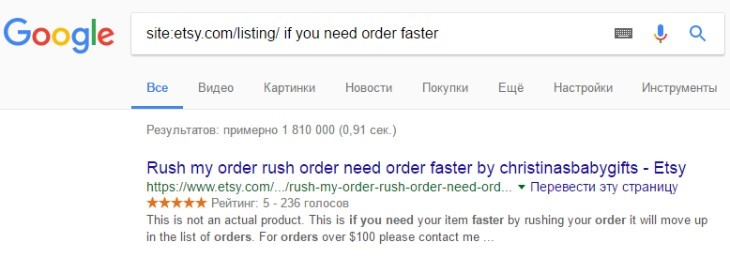

Бонусы
Для читателей книги мы подготовили несколько полезных бонусов:
• чек-лист по настройке нового магазина
• чек-лист по поиску фраз для заголовков и тэгов
• примеры текстов и шаблонов благодарственных писем
• 7 способов постоянно получать бесплатные листинги
• 20 главных вопросов, которые интересуют покупателей на Etsy
• пример Privacy Policy GDPR для Etsy-магазина
• примеры коммерческих лицензий для цифровых файлов
Чтобы скачать файлы, перейдите по любой из этих ссылок:
https://cloud.mail.ru/public/L8Yo/XdTAXQJ9p
https://drive.google.com/drive/folders/1QShFKYrLXdi-1fk45APk_xNaPUpzNx2v
Словарь терминов
Список терминов, которые используются в книге:
• Etsy, Этси – сайт Etsy.com, а также админы сайта
• Админы (админы Etsy) – сотрудники Etsy
• Листинг (listing) – страница товара
• Айтем (item) – по сути то же самое, что и листинг. Слово используется
намного реже
• Ренью (обновить, renew) – обновление даты публикации листинга на те-
кущую, возобновление листинга после продажи
• Фавориты (избранное, лайки, favorites) – добавление товара или мага-
зина в избранное на Etsy
• Ревью (отзыв, фидбек, review) – отзывы на товары
• Конво (conversation, messages) – система личных сообщений между
участниками Etsy, например, между продавцом и покупателем
• Полисис (правила, policies) – правила работы магазина (а также правила
Этси)
• Хендмейд (handmade) – изделия ручной работы, рукоделие
• Винтаж (vintage) – товары, созданные 20 лет назад или ранее (не обяза-
тельно ручной работы)
• SEO (СЕО, поисковая оптимизация) – набор параметров, которые влияют
на позиции листингов (магазина) в результатах поиска Etsy или Google
• PayPal (Пэйпал, ПП) – одна из самых популярных в мире платёжных си-
стем. Используется для приёма оплат на Etsy. Сайт paypal.com
• Etsy Payments (Этси Пэйментс) – система приёма платежей на Etsy, кото-
рая доступна лишь в некоторых странах (например, США, Канада, Вели-
кобритания, Евросоюз, Австралия). В странах СНГ подключить её на дан-
ный момент нельзя. Ранее называлась Direct Checkout (Директ Чекаут).
1. Регистрация магазина
Зачем вы открываете магазин
Прежде чем открывать магазин на Этси, тратить на него деньги, время, энергию,
задайте себе вопрос – зачем мне это нужно? И будьте с собой предельно
честны.
Если создание разных рукодельных вещей – это одно из ваших хобби, помимо
которого вы занимаетесь и другими важными делами, у вас есть любимая ра-
бота, а свободного времени всего 2-3 часа в неделю, возможно, тогда это не та
площадка, которая вам нужна. На Этси очень жёсткая конкуренция, поэтому до-
биться успеха, работая спустя рукава, не получится.
Если же вы не представляете себя без вашего любимого занятия, вы настолько
влюблены в него, что не готовы сдаваться, а также готовы уделять внимание
развитию Этси магазина ежедневно, пусть и по чуть-чуть – тогда вам опреде-
ленно стоит попробовать.
Несколькими годами ранее, когда на Etsy не было такой конкуренции, и поис-
ковый алгоритм не был таким сложным, молодым магазинам было довольно
легко выбиться в первые ряды. Но время идет, и команда площадки совершен-
ствуется. Мы ни в коем случае не хотим вас отговаривать, мы лишь хотим пре-
дупредить и подготовить к плодотворной работе.
Также имейте в виду, если товар, который вы делаете, не уникален, но у вас
есть свободное время, желание и терпение – добро пожаловать в сообщество
этсианинов!
Если же ваши изделия единственны в своем роде и конкуренция мала, вам бу-
дет намного легче добиться успеха даже при минимальных затратах времени и
сил.
Ну, а если, вы хотите мгновенных результатов, но ни времени, ни желания раз-
вивать магазин у вас нет, то лучше и не начинать, как мне кажется.
Что можно и что запрещено продавать на Etsy
Etsy.com (или Этси) – американский интернет-магазин, зарубежная электрон-
ная площадка, а также её называют онлайн-ярмаркой, где можно продавать:
• вещи или товары, сделанные собственными руками (как физические, так
и цифровые)
• инструменты и вспомогательные принадлежности, товары для рукоделия
• старинные вещи, или винтаж
В разделе «ручная работа» перепродавать чужие хендмейд товары или товары,
купленные на сторонних сайтах, запрещено правилами площадки. Мало того, в
некоторых случаях магазин может не отображаться в поиске или быть вре-
менно заблокированным до того момента, пока вы не предоставите доказатель-
ства авторства или причастности к созданию тех или иных изделий, выставлен-
ных в категории ручной работы.
Полный перечень товаров, запрещенный к продаже:
• алкоголь, табак, наркотики, средства для их употребления, лекарственных
препараты (в том числе электронные сигареты и жидкости для электрон-
ных сигарет)
• продукты животного происхождения и человеческих останков (живые жи-
вотные, шкуры кошек или собак, слоновые кости или бивни, изделия, сде-
ланные из человеческих останков за исключением зубов или волос)
• взрывчатые вещества, фейерверки или бенгальские огни, горючие веще-
ства, радиоактивные материалы, токсичные вещества
• товары, которые провоцируют ненависть и нетерпимость по расовому,
национальному и т.п. признакам
• запрещенные местными законами предметы
• порнография и материалы для взрослых должны иметь отметку в ли-
стинге
• предметы, поощряющие и призывающие к насилию
Если вы сомневаетесь, относятся ли ваши товары к запрещенной группе, пожа-
луйста, свяжитесь с командой Этси и уточните эту информацию.
Стоит ли открывать магазин, если ещё не всё готово
Конечно стоит. Лучше сделать хоть как-то, чем пытаться сделать всё идеально.
Даже если у вас пока не готовы супер-фотографии и мало товаров, лучше всё
равно сделать первый шаг и сдвинуться с мёртвой точки.
Многие продавцы вначале думают, что к ним сразу пойдёт наплыв покупателей,
которые разочаруются, глядя на их небольшой ассортимент или плохие фото-
графии.
Если у вас очень узкая ниша, в которой тем не менее много клиентов – то тео-
ретически это возможно. Но более вероятно, что в первые несколько недель
или даже месяцев заходов в ваш магазин будет не очень много. А потому, вы
сможете постепенно всё улучшать, потихоньку знакомясь с возможностями
Etsy. Не бойтесь – сделайте первый шаг!
Какие комиссии существуют на Etsy
Размещение товаров на Этси платное, комиссия состоит из двух частей:
• $0.20 – стоимость размещения одного товара сроком на 4 месяца. Если
через 4 месяца товар не будет продан, нужно продлить срок его публика-
ции и снова заплатить $0.20 (но вы можете разместить первые 40 товаров
бесплатно, если зарегистрируетесь по партнёрской ссылке)
• 5% – после продажи вы должны заплатить Этси 5 процентов от суммы
стоимости товара и доставки
Также 20 центов стоит обновление даты размещения листинга (renew), после
которого отсчёт 4 месяцев начинается заново.
Помимо этого, продавцы из ряда стран платят НДС с комиссий Этси. К числу
таких стран относятся, например, Россия и Беларусь, где НДС равен 20%.
Например, комиссия за размещение товара – 20 центов. Плюсом к этому нужно
заплатить 20% от 20 центов, то есть ещё 4 цента. А после продажи товара – 20%
от комиссии с этой продажи.
Как принимать оплату на Etsy
На Этси есть два основных способа приёма оплат:
• Etsy Payments – это собственная платежная система Этси. Она доступна
лишь в ряде стран Европы, Америки и Австралии (список стран посте-
пенно расширяется). В странах СНГ подключить её нельзя.
Вы можете проверить наличие своей страны в этом списке
https://help.etsy.com/hc/en-us/articles/115015710408. Если вашей страны
там нет, значит Этси Пэйментс вам пока недоступен, но скорее всего до-
ступен PayPal.
• PayPal – платёжная онлайн-система. К онлайн-счету можно привязать
банковские карты, а со счета PayPal можно выводить денежные средства
на банковский счет. ПайПал распространен по всему миру, прост, удобен,
надежен и безопасен.
Правда, в некоторых странах (например, Украина, Беларусь, Армения)
ПайПал работает в ограниченном режиме и не позволяет принимать
оплаты. В этом случае работу придется вести через посреднические ком-
пании (подробнее об этом читайте в вопросе «Варианты приёма платежей
украинскими продавцами»).
Прежде, чем регистрировать магазин на Этси, вам нужно зарегистриро-
вать аккаунт в PayPal.
Куда поступают деньги после продажи
Если у вас подключен PayPal, то оплата поступает на ваш Пайпал аккаунт. После
этого вы можете вывести деньги на свой банковский счёт.
Если у вас подключен Etsy Payments, то деньги поступают на ваш Etsy счёт, а
затем автоматически переводятся на банковский счёт каждый понедельник.
Я плохо знаю английский. Смогу ли я продавать на Etsy
Основные клиенты на Этси – жители США (60-65%). Поэтому всё общение с
ними ведётся на английском языке. Также на английском пишутся описания то-
варов и информация о магазине.


Вот 5 способов, которые упростят этот процесс:
1. Листинги американцев и британцев
Самый простой способ составить описание для товара — посмотреть, что пишут
в своих листингах конкуренты.
При этом рекомендую отфильтровать магазины только из США или Великобри-
тании, чтобы описания были составлены носителями языка.
Для этой цели можно также использовать Google. Введите в строку поиска ко-
манду «site:etsy.com/listing/» и через пробел фразу, которую хотите найти. Так
вы получите список листингов, где есть похожий текст.
2. Google Translate
С марта 2017 года перевод в паре языков «английский — русский» работает на
основе нейронных сетей. Качество переводов стало значительно лучше.


Старайтесь писать простыми фразами, чтобы сократить возможное число оши-
бок переводчика. Лучше написать коротко, но понятно.
3. Grammarly
Онлайн-сервис, который подчеркнёт ошибки в тексте и предложит варианты
исправлений. Есть бесплатная версия. В платной версии больше правил про-
верки текста.
4. Fluent Express
В этом сервисе ваши тексты проверят носители языка. Делают они это
достаточно быстро, обычно в течение нескольких минут.
Проверка каждых 300 символов стоит $0.89.
5. Сайты изучения иностранных языков
Есть несколько сайтов, на которых вы можете бесплатно написать любой текст
— и вас исправят носители языка. Например, italki.com или hinative.com.
На Italki вы также можете найти себе Skype-преподавателя языка. И попросить
научить вас деловой переписке, а также договориться исправить тексты описа-
ний (или попросить подсказать, какие фразы звучат ненатурально).
При регистрации по ссылке https://www.italki.com/i/AcA6aG вы получите бонус
10 долларов на урок с любым преподавателем (но после того, как оплатите хотя
бы 1 урок стоимостью 10 долларов или больше).
6. Фразы деловой переписки
Поищите в интернете статьи, где описаны расхожие фразы для делового
письма. Например, как приветствовать, как прощаться и т.п. Выпишите самые
подходящие.
Можно ли на Etsy продавать товары, которые выставлены на
продажу где-то ещё
Можно, это не запрещено правилами Etsy. Единственный момент – Этси не раз-
решают размещать ссылку на страницу другого сайта, где можно купить этот же
товар в обход Этси.
Можно ли быть куратором - мастера делают, а я продвигаю и
продаю их работы
Правилами Etsy это запрещено. Это называется перепродажей.
Продавать handmade товары может только автор изделий (то есть как минимум
идея и дизайн принадлежат владельцу магазина).
Тем не менее на Этси нередко встречаются магазины, которые объединяют не-
скольких мастеров внутри своей страны, а сами только курируют процесс, об-
щаются с покупателями и отвечают за прием платежей.